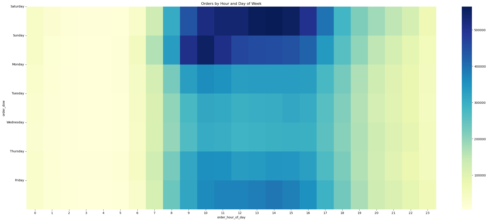
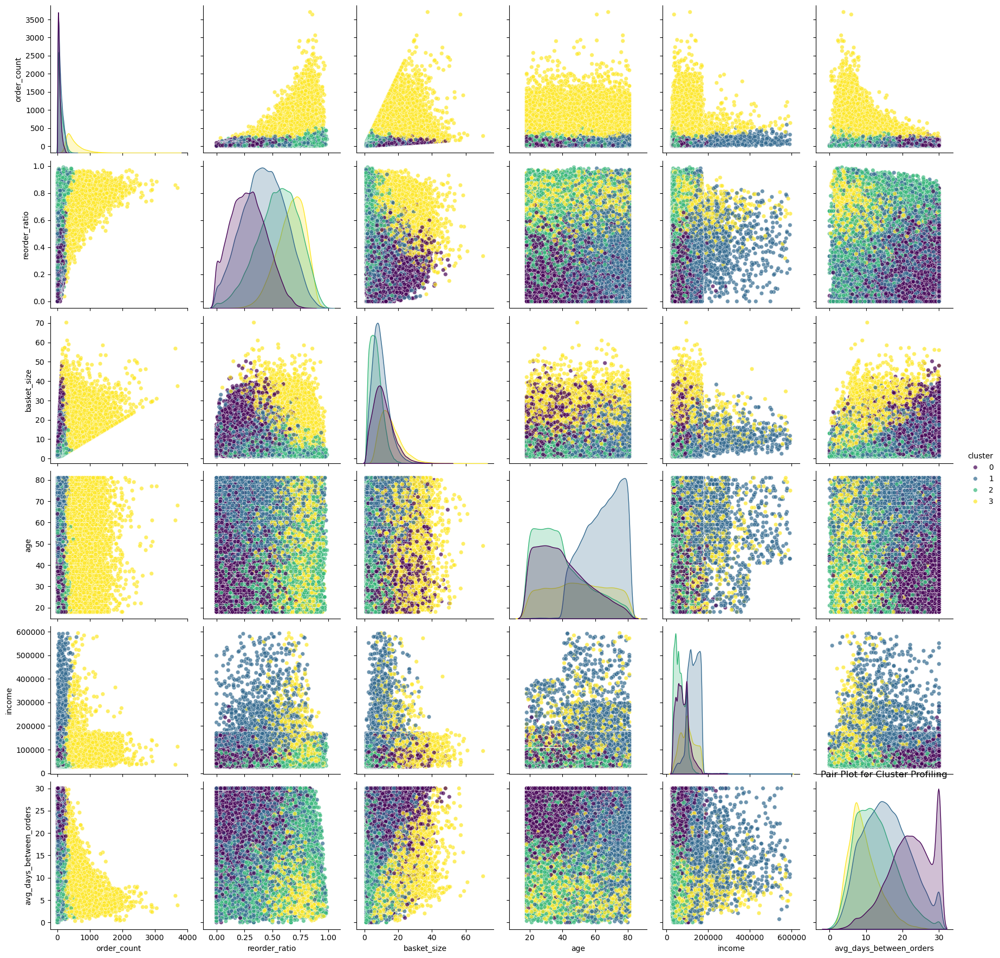

Instacart Customer Segmentation Analysis
A Python-based business intelligence analysis and k-means clustering model for open-source Instacart data.
Project Summary
Problem: Instacart needs to understand its diverse customer base better to increase revenue through data-driven strategies for marketing and product offerings.
Methodology: Through advanced feature engineering, Principal Component Analysis, and k-Means Clustering applied to the 2017 Instacart Online Grocery Shopping Dataset, I identify four distinct customer groups based on their buying habits, and develop clear, actionable business recommendations for each.
Key Findings: Discovered four major groups of customers with distinct buying habits.
- Bulk Shoppers - Placed infrequent large orders for essentials
- Meal Planners - Placed regular repeat orders
- Commuters - Placed frequent, small orders on weekdays
- Impulse Buyers - Placed very frequent, large orders for diverse products
Data Overview & Preprocessing
The Instacart Online Grocery Shopping Dataset 2017 is an anonymized dataset containing a sample of over 3 million grocery orders from more than 200,000 Instacart users. For each user, the dataset records between 4 and 100 of their orders, with the sequence of products purchased in each order. It also provides the week and hour of day the order was placed, and a relative measure of time between orders.
Data Cleaning
Consistency checks showed the dataset to be largely free of errors, with no duplicate rows and only 16 missing values in the "product_name" column.
Feature Creation
Created the following customer-level aggregated features after grouping by "user_id":
- Order Count - Total number of orders
- Average Days Between Orders - Mean of "days_since_prior_order"
- Unique Products - Number of unique product IDs
- Weekend Order Ratio - Percent of all orders placed on Saturday or Sunday
After aggregating by order and user:
- Average Basket Size - Mean number of products per order
- Average Reorder Ratio - Mean percent of reordered products per order
Also determined department preferences for each user in the following manner:
dept_preferences = df.groupby(['user_id','department_id']).agg(
dept_purchases=('product_id','count')
).reset_index()
dept_preferences['dept_rank'] = dept_preferences.groupby('user_id')['dept_purchases'].rank(ascending=False)preferred_dept = dept_preferences[dept_preferences['dept_rank']==1][['user_id','department_id']]Data Transformation
Applied StandardScaler to prepare data for Principal Component Analysis.
EDA Findings
Total sales by department show that Produce and Dairy/Eggs departments are far and away the most popular.
Ranking products by number of orders shows that bananas are Instacart's top-seller and that organic produce is exceptionally popular in this dataset.
Order counts have a bimodal distribution throughout the day, increasing through the morning before dropping slightly in the early afternoon, then rising to a mid-afternoon peak and finally steadily declining.
Saturday and Sunday are by far the busiest days for Instacart orders, and show starkly different patterns in order timing.
Methodology: K-Means Clustering
To ensure the best performance of the classification model, I first applied PCA to reduce the dataset's dimensions down to three principal components that explained 74.6% of the variance.
Using the Elbow Method, I estimated that four clusters should be appropriate for this dataset. After that, applying the k-means clustering algorithm is a rather straightforward process. We can visualize the resulting clusters in PCA space:
Cluster Profile Analysis
First Cluster Characteristics
- Large basket size (11.08 items per order)
- Infrequent orders (every ~22 days)
- Weekend-focused (46% of orders on weekends)
- Lower reorder ratio (29%)
Interpretation
Bulk Shoppers - These customers make fewer but bigger purchases, likely stocking up on essentials. Their weekend shopping habit suggests they have more time to plan large orders.
Second Cluster Characteristics
- Moderate, consistent basket size (9.39 items per order)
- High reorder ratio (42%)
- Frequent orders (every ~16 days)
- Older demographic (avg. age 64)
Interpretation
Meal Planners - These shoppers exhibit habitual buying behavior, likely replenishing staples (e.g., groceries, household essentials). Their high reorder rate suggests predictability.
Third Cluster Characteristics
- Small, frequent orders (every ~13 days)
- Low weekend shopping (only 28% of orders)
- Very high reorder ratio (55%)
- Younger, lower income (avg. age 39, $63k income)
Interpretation
Commuters/Convenience Shoppers - These customers prioritize speed and convenience, likely making quick, need purchases, or possibly are commuters on lunch breaks or before/after work.
Fourth Cluster Characteristics
- Very frequent orders (every ~9 days)
- Largest basket size (15.42 items)
- Highest product diversity (162 unique products)
- High reorder ratio but varied purchases (66%)
Interpretation
Impulse Buyers - These shoppers love exploring new products and make frequent, spontaneous purchases. They are high-value but unpredictable.
Recommended Marketing Strategies
Bulk Shoppers:
- Volume discounts & bulk promotions (e.g., "Buy 3, Get 30% Off")
- Weekend-exclusive deals to encourage larger purchases
- Loyalty rewards for high basket sizes
Meal Planners:
- Subscription program for recurring purchases (e.g., "Subscribe & Save")
- Personalized reminders for restocking key items
- Bundle deals on frequently repurchased products
Commuters:
- Push notifications for fast reordering (e.g., "Need this again? 1-Click Reorder!")
- "Morning Rush" deals on coffee/snacks
- Lunch specials
- Recommendations for commuter basics: push items like protein bars, or travel-sized toiletries
Impulse Buyers:
- New product recommendations ("Trending items you might love!")
- Limited-time offers & flash sales
- VIP/loyalty perks to encourage repeat engagement